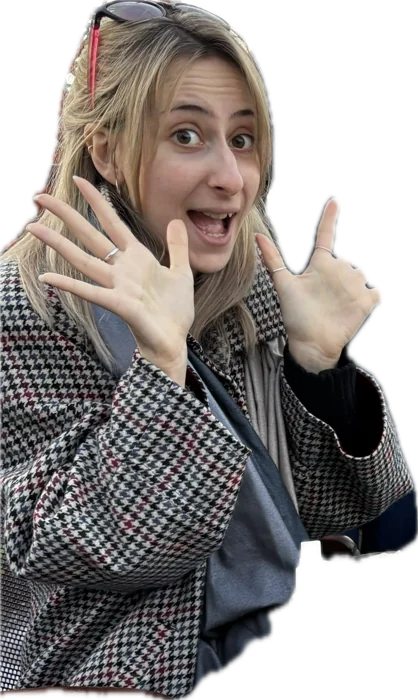
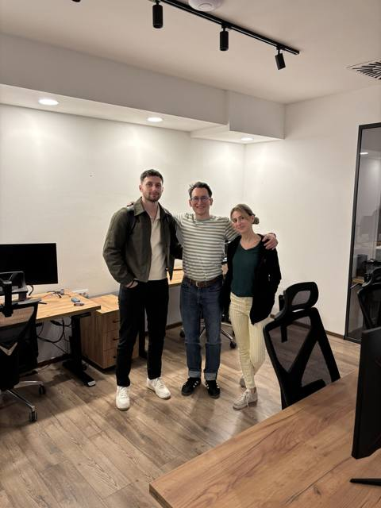
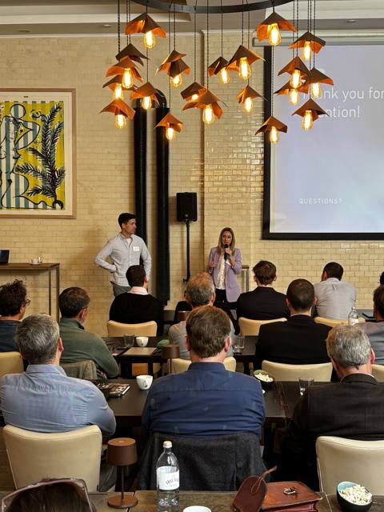
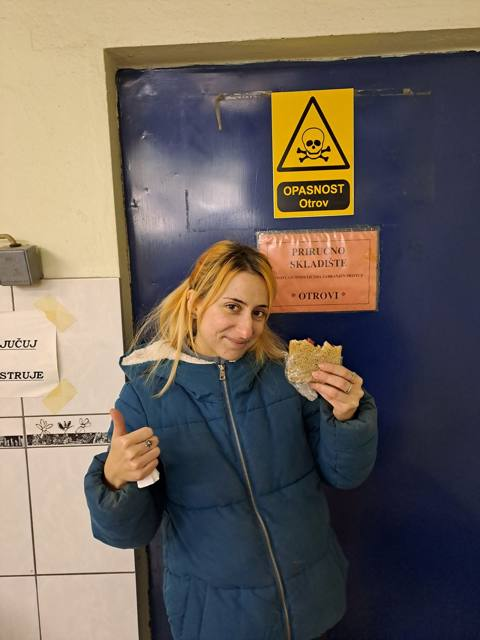
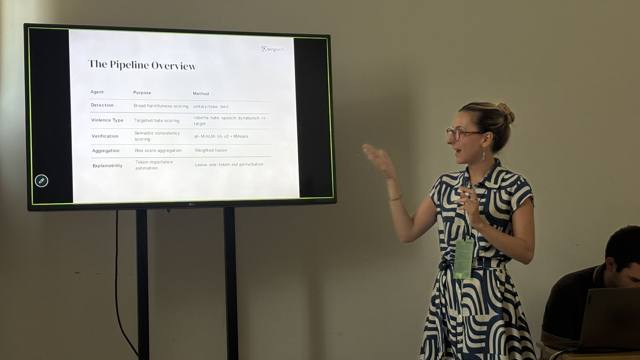
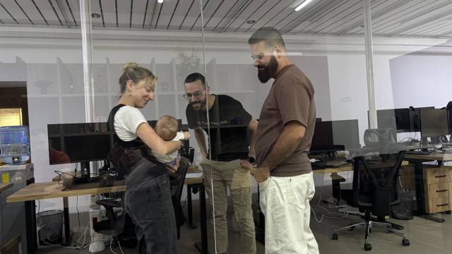
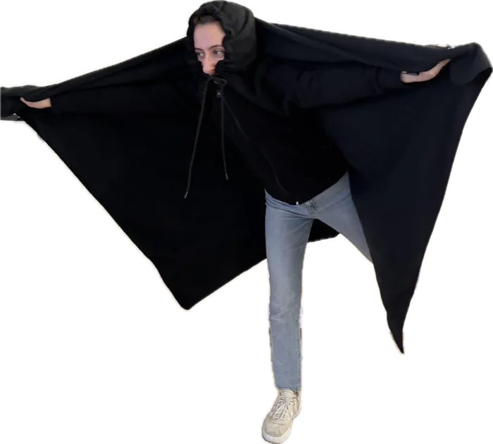
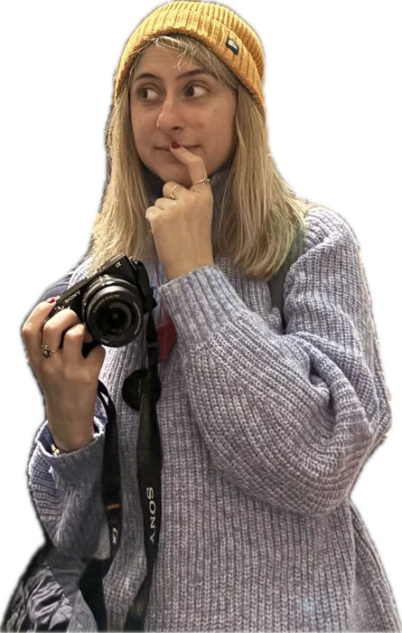

Sad je --:--
vreme je za
nova sećanja 💜
vreme je za
nova sećanja 💜
ISIDORA
Nedostajaćeš
nam! 💜
Za Isidoru, od najdražih joj kolega_inica 💜
Pokreni inference ↓


Za Isidoru, od najdražih joj kolega_inica 💜
Pokreni inference ↓

EmotionallyChallengingLiquidError.
Inicijalni commit. Šest kancelarija kasnije, i dalje pita ko je spustio grejanje.

Novi mikroservis: Isidora, Deki i Dami. Uptime 100%, latencija ispod sekunde od „Jesi čuo…?” do „NEMA ŠANSE!”

Naučila mašinu da čita tekst. Mašina i dalje čita sporije od nje — naročito Slack. A posle: talk u Berlinu, na velikoj sceni.

Beli mantil, kapica za kosu, podaci prikupljani na minusu. Model koji gleda proizvodnju.

Hale, crepovi, stativi, terminali. Dataset snimljen pod tablom „OPASNOST – OTROV”. Bez povreda.

„The Pipeline Overview” — konferencija, publika, ruke koje objašnjavaju pola prezentacije.

Najvažniji stakeholder koji je ikad prošao kroz kancelariju. Jedini kome je dozvoljeno da prekine sastanak — i jedini koji nije dobio Microsoft Forms. Isidora preuzela ownership za 0.3 sekunde.

Merge u main nije moguć — previše ćemo ti nedostajati. Ali grana ostaje zauvek u našem repou. 💜


Kao svaki dobar model, i Isidora je imala redovne release-ove. Ovo je minimum 9 — koliko je snimljeno. Prevuci klizač i prođi kroz verzije.
Nedostajaće ti? Ne brini, istrenirali smo model. Pitaj šta god hoćeš.

* IsidoraGPT može da halucinira. Prava Isidora nikad.
Šest kancelarija, jedno pitanje: ko je opet spustio grejanje? Pomeri termostat i proveri da li je Isidori konačno toplo.
Šta kažu kolege_inice. Biće ih još! 💌
Spakovali smo ti dve stvari koje svaka developerka treba: nešto za vreme i nešto za memoriju.
Stara sećanja: 4.5 godine, 6 kancelarija, minimum 9 frizura — backup je kod nas. Ostatak diska je za sve što tek dolazi.